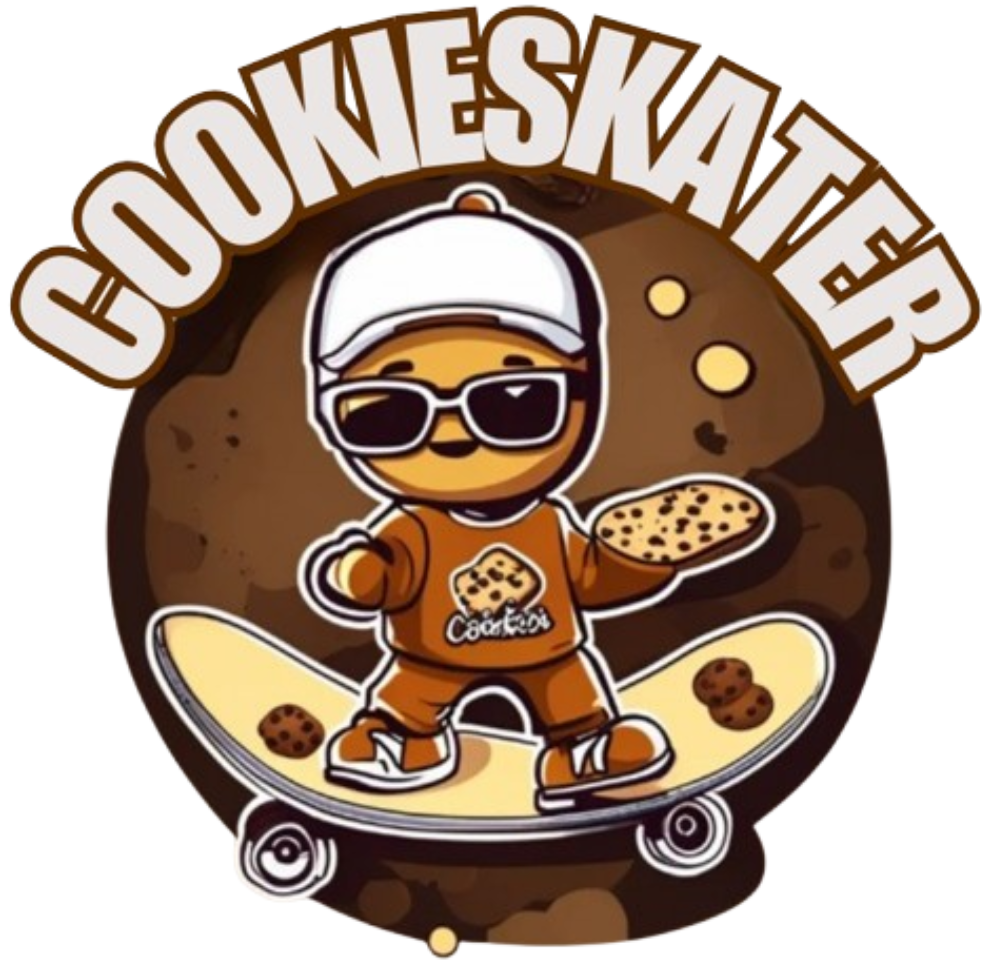

Skateboarding is more than just a sport; it's a lifestyle and an art form. Originating in the 1950s, skateboarding has evolved into a global phenomenon, influencing music, fashion, and street culture.
Whether you're cruising down the streets, mastering tricks at the skatepark, or filming creative videos, skateboarding is about freedom and self-expression.